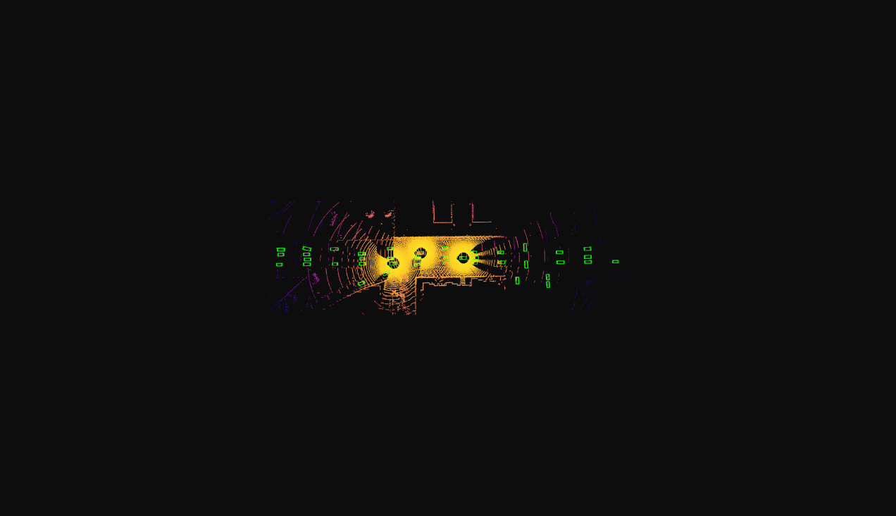
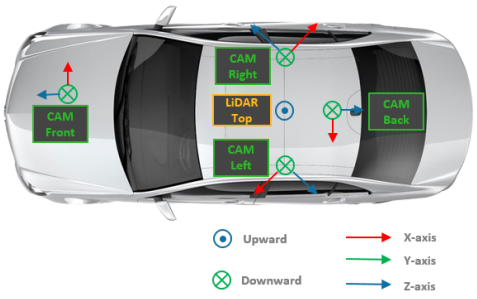
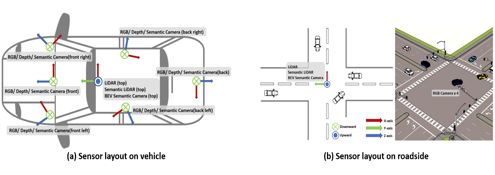
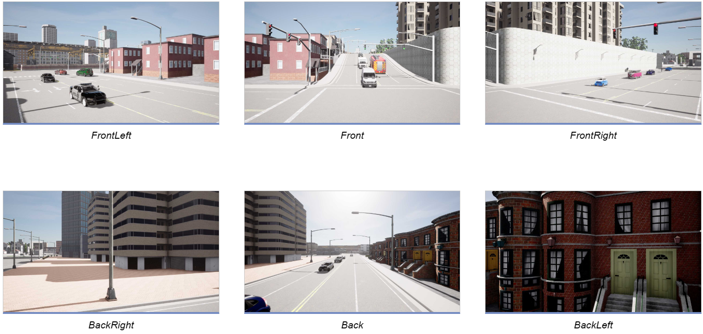
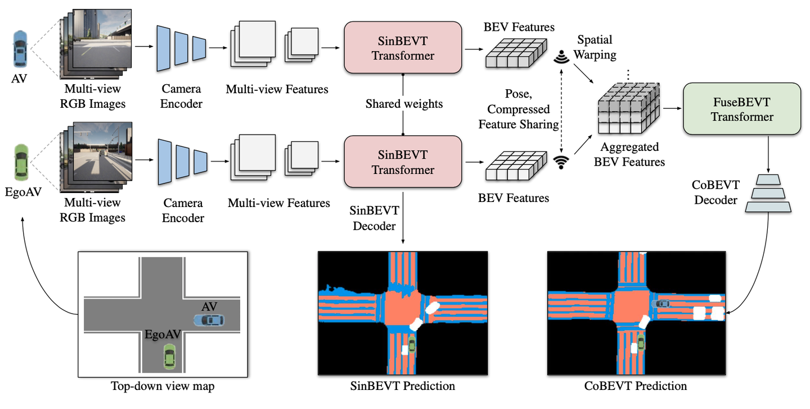
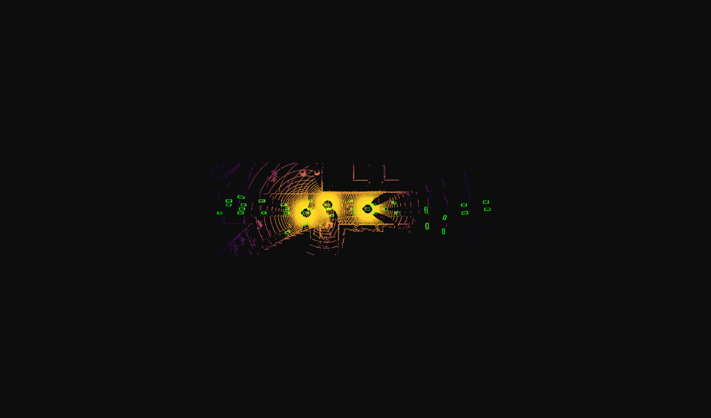

Scenario-Adaptive Multi-Vehicle Cooperative Perception
A simulation-driven framework for evaluating cooperative BEV perception across heterogeneous traffic scenarios, quantifying uncertainty and reliability, selecting scenario-appropriate models, and improving perception through neural-architecture-search-based tuning.

Cooperative perception can overcome the field-of-view limits of a single automated vehicle—but only if it remains reliable across changing scenes.
Single-vehicle perception is inherently vulnerable to occlusion, limited sensing range, and scene-specific model performance. Vehicle-to-vehicle and vehicle-to-infrastructure cooperation can extend the observable environment by sharing perception information, while bird’s-eye-view (BEV) representations provide a common spatial frame for multi-view fusion.
The project therefore focused on two linked bottlenecks: accuracy and reliability. Rather than assume one perception model works equally well everywhere, the study asked how model choice, sensing configuration, and hyperparameters should adapt to different road environments.


Five road scenarios × two sensing configurations × three traffic-flow levels produced 30 simulation configurations.
The simulation set covered both urban and highway operation:
- Highway basic segment
- Highway curve
- Highway ramp
- Urban basic road segment
- Urban intersection
Highway scenarios used a 100 km/h design reference, while urban segments and intersections used lower design speeds. Three traffic-flow levels were introduced to represent free-flow, stable-flow, and saturated conditions.
Each vehicle used six RGB cameras (70° field of view, 1920 × 1080): front, front-left, front-right, rear, rear-left, and rear-right. Roadside sensing was tested under low- and high-configuration schemes.

CARLA, SUMO, and OpenCDA were combined into one cooperative-driving experiment pipeline.

Perception quality was evaluated not only by accuracy, but also through uncertainty and spatiotemporal reliability.
The project constructed an uncertainty-prediction framework that separates two forms of uncertainty:
Uncertainty associated with the data and the sensing task itself, including noise and scene ambiguity.
Uncertainty associated with model parameters and limited knowledge of unfamiliar conditions.
Reliability was then examined from both algorithm and vehicle perspectives, with vehicle-level failures analyzed across temporal and spatial dimensions. The resulting loss / reliability measure became the basis for comparing candidate perception models across scenarios.
Thirteen BEV models were screened by scenario, then the best-performing architecture was tuned with NAS.
For each scenario, the collected data were used to train and compare 13 BEV-oriented cooperative perception models. The model with the smallest perception loss was treated as the scenario-specific baseline for further optimization.
Neural Architecture Search (NAS) was then used to explore hyperparameter settings such as learning rate, dropout, and training duration.
- Adaptation to known scenarios: select a model and parameter set that performs well for an identified traffic environment.
- Evolution under unfamiliar scenarios: search for improved settings when the existing model is no longer sufficiently reliable.
The study also compared roadside-sensor configurations by scenario, linking perception performance to sensing design rather than treating model architecture as the only optimization variable.
Optimization reduced the reported perception loss by approximately 99.98% in the selected comparison.
| Before optimization | After optimization | |
|---|---|---|
| Model | ciassd_intermediate_fusion | point_pillar_cobevt |
| Training epochs | 15 | 170 |
| Perception loss | 29.2936556 | 0.0056841 |
The project report also records improved average perception accuracy across multiple IoU thresholds after optimization.

The main contribution is not a claim that one model is universally optimal. Instead, the results support a scenario-aware strategy in which model selection, hyperparameters, and sensing configuration are treated as variables that should adapt to the operating environment.
My documented role focused on data collection, data analysis, and research reporting.
I contributed to assembling and analyzing results from the 30 simulation configurations and helped translate the experiments into the project report.
The original project presentation explicitly records my division of work as data collection and analysis, and report writing.
Project basis: “场景驱动的自适应-自进化多车协同环境感知方法,” Tongji University, 23rd TongLuRen Transportation Technology Competition.